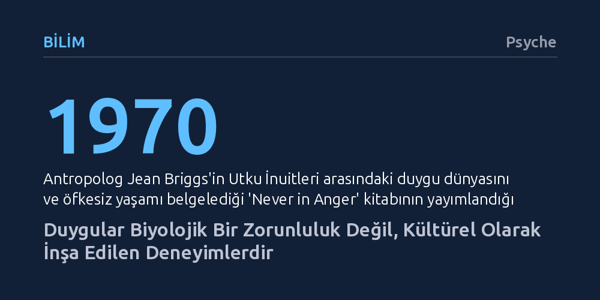

BILIM · Psyche · 2026-10-17
Antropolojik araştırmalar, duyguların evrensel biyolojik programlar olmadığını, sosyokültürel bağlamda sürekli inşa edildiğini gösteriyor. Bu bulgu, Batı'nın akıl ve duygu hiyerarşisi üzerinden kurduğu sömürgeci üstünlük anlatısını ve biyolojik indirgemeciliği çürütüyor.
Duyguların doğuştan gelen evrensel refleksler değil, içinde yaşadığımız kültür tarafından şekillendirilen yapılar olduğunu göstererek insan doğasına ve toplumsal aidiyetlerimize bakışımızı kökten değiştirir.

Batı emperyalizmi, fethettiği ve sömürgeleştirdiği coğrafyalardaki varlığını sıklıkla ahlaki bir zorunluluk kisvesi altında meşrulaştırmaya çalıştı. İngiliz yazar Rudyard Kipling'in meşhur ifadesiyle 'beyaz adamın yükü' olarak adlandırılan bu yaklaşım, Avrupalı güçlerin okyanuslar ötesindeki 'vahşileri' uygarlaştırma borcu olduğu iddiasına dayanıyordu. Bu tahakküm söylemi, yalnızca askeri ya da ekonomik bir üstünlük iddiasıyla sınırlı kalmadı; merkezine duyguların doğasına dair sözde evrensel bir hiyerarşiyi yerleştirdi.
Sömürgeci mantığa göre insani duygular, biyolojik ve evrensel bir süreklilik çizgisi üzerinde konumlanıyordu. Bu çizginin bir ucunda Avrupalıların rasyonel, dizginlenmiş ve incelmiş zihin dünyası dururken, diğer ucunda sömürgeleştirilen halkların kontrolsüz, fevri ve ilkel kabul edilen duygusal yapıları yer alıyordu. Böylece ırkçı hiyerarşiler, akıl ile duygu arasındaki bu sözde biyolojik uçurum üzerinden doğallaştırıldı.
İngiliz belgeselci ve yazar Lewis Waller, duyguların biyolojik bir belirlenimcilikle tüm insanlarda aynı çalıştığı dogmasını sarsan iki öncü antropolojik saha araştırmasını gündeme getiriyor. Bu çalışmaların ilki, Amerikalı antropolog Jean Briggs'in 1970 tarihli 'Never in Anger' (Asla Öfkeyle Değil) adlı eseri. Briggs, Utku İnuitleri arasında yaşadığı dönemde, Batı toplumlarında son derece temel ve kaçınılmaz kabul edilen öfke duygusunun bu toplumda neredeyse hiç dışavurulmadığını, yetişkin olmanın en temel ölçütünün öfkelenmemek olduğunu belgeledi.
İkinci kritik kanıt ise antropolog Catherine Lutz'un Mikronezya'daki Ifaluk Mercan Adası'nda yürüttüğü saha çalışmasına dayanan 1988 tarihli 'Unnatural Emotions' (Doğal Olmayan Duygular) araştırmasıdır. Lutz, Ifaluk halkının duyguları bireyin içinde cereyan eden yalıtılmış biyolojik durumlar olarak değil, kişiler arasındaki ahlaki ve sosyal ilişkiler bağlamında kavradığını gösterdi. Batı'nın evrensel sandığı temel duygusal kategorilerin, farklı kültürlerde aynı anlama ya da varoluşa sahip olmadığı açıkça kanıtlandı.
Waller'ın aktardığı bu antropolojik külliyat ve ardından gelen güncel bilimsel araştırmalar, duyguların beyne doğuştan kazınmış, otomatik tepkiler olmadığını gözler önüne seriyor. Elbette insan bedeninde kalp atışının hızlanması ya da terleme gibi fizyolojik süreçler mevcuttur; ancak bu bedensel tepkilerin nasıl deneyimlendiği, hangi duygu etiketiyle sınıflandırıldığı ve toplumsal hayatta nasıl bir karşılık bulduğu tamamen sosyokültürel süzgeçlerle belirlenir.
Duygular biyolojiye indirgenemez; çünkü onlar biyolojinin katı sınırları içinde sabitlenmiş değil, kültürel pratiklerin içinde durmaksızın inşa edilen dinamik süreçlerdir. Bir toplumda çok belirgin olan ve 'doğal' sayılan bir his, bir başka toplumun dilinde, anlam dünyasında ve gündelik etkileşiminde kendine yer bulamayabilir.
Duyguların evrensel değil kültürel olarak inşa edildiği tespiti, yalnızca psikolojiyi değil doğrudan siyaset felsefesini ve toplumsal örgütlenmeyi de ilgilendiriyor. Zira siyasal topluluklar, soyut ideolojilerden ziyade tanıdıklık, yakınlık ve ortak hisler üzerine inşa edilir. Bireyler kendilerine benzer hissettikleri ve aşina oldukları insanlarla bir topluluk oluşturma eğilimindedir.
Bu durum şu kritik soruyu beraberinde getiriyor: Eğer duygusal bağlarımız yerel ve kültürel olarak kuruluyorsa, insanları evrensel değerler etrafında birleştiren bir enternasyonalizm nasıl mümkün kılınabilir? Duyguların biyolojik bir yazgı olmadığını, aksine öğrenilebilir ve dönüştürülebilir yapılar olduğunu kavramak, sınırların ötesinde yeni bir ortak duygu zemini inşa etmenin ilk basamağıdır.